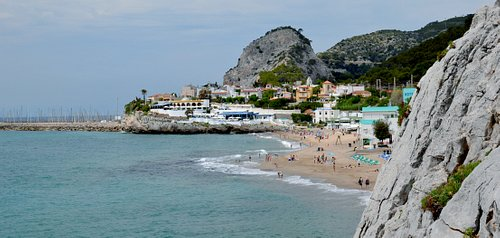

Cristiano Ronaldo dos Santos Aveiro, conocido como Cristiano Ronaldo (EL BICHO), es un futbolista portugués. Juega como extremo izquierdo o delantero y su equipo actual es el Al-Nassr F. C. de la Liga Profesional Saudi. Es internacional absoluto con la selección de Portugal, de la cual es capitán y máximo goleador histórico.
Cristiano Ronaldo dos Santos Aveiro, conocido como Cristiano Ronaldo (EL BICHO), es un futbolista portugués. Juega como extremo izquierdo o delantero y su equipo actual es el Al-Nassr F. C. de la Liga Profesional Saudi. Es internacional absoluto con la selección de Portugal, de la cual es capitán y máximo goleador histórico.
Cristiano Ronaldo dos Santos Aveiro, conocido como Cristiano Ronaldo (EL BICHO), es un futbolista portugués. Juega como extremo izquierdo o delantero y su equipo actual es el Al-Nassr F. C. de la Liga Profesional Saudi. Es internacional absoluto con la selección de Portugal, de la cual es capitán y máximo goleador histórico.
Cristiano Ronaldo dos Santos Aveiro, conocido como Cristiano Ronaldo (EL BICHO), es un futbolista portugués. Juega como extremo izquierdo o delantero y su equipo actual es el Al-Nassr F. C. de la Liga Profesional Saudi. Es internacional absoluto con la selección de Portugal, de la cual es capitán y máximo goleador histórico.
Cristiano Ronaldo dos Santos Aveiro, conocido como Cristiano Ronaldo (EL BICHO), es un futbolista portugués. Juega como extremo izquierdo o delantero y su equipo actual es el Al-Nassr F. C. de la Liga Profesional Saudi. Es internacional absoluto con la selección de Portugal, de la cual es capitán y máximo goleador histórico.

Fútbol
Ping-Pong
Surf
Parágraf informatiu breu. Parágraf informatiu breu. Parágraf informatiu breu.